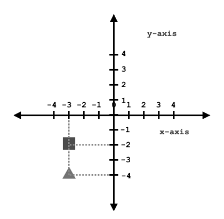

Vector Math, part 1
This snippet goes over vector math in the Zero Engine. Points, Vectors, their operations of addition, subtraction, scaling and magnitude calculation are covered. This also covers how the x-, y-, and z-axis are used for the Translation, Rotation and Scale properties of the Transform component.
Learning Objectives
By the end of this lesson you should...
- Understand what Points are and how to find Vectors using them.
- Calculate distance using Vectors.
- Know how to scale an object in the Zero Engine.
1 Dimensional (1D) Axis
The Number Line
The number line, or axis, allows you to represent all the real numbers. It heads infinitely in either direction covering all real numbers sequentially and uniquely. These characteristics allow you to express any position along the line via a real number in a way that allows you to consistently compare one position to another.
The number line is conventionally centered around the Origin, which is at the number zero, 0. When a number is greater than zero we call it positive and when it is less than zero, we call it negative.
Points
When using numbers to denote position, the numbers represent the distance to the origin. We call these numeric representations of position, points.

The square is at point -3 while the circle is at point 2.
In math, a point is usually written with a capital letter. The point will have either a unique letter or subscript:
By assigning numbers we can determine how far away one object is from another.
Distance Calculation
In 1D, finding the absolute value, or positive, difference between two points gives you the distance.
Vectors
If the square were to travel to the circle then it would have to travel 5 units to the right, or add 5. If the circle were to travel to the square then it would have to travel 5 units to the left, or subtract 5.
Visually drawing the arrow pointing in the positive direction, we can see the change in position needed for the square to travel to the circle. This is a vector. It represents the difference between two positions. The arrow denotes whether the number is added or subtracted based on whether it is pointing toward the positive or negative end of the number line, respectively.
Drawing in the opposite direction we get the other vector where the circle travels to the square.
In math, we write vectors with an arrow over the top, and as seen above you can create one by subtracting 2 points:

Traveling from the square to the circle, we can write a vector with subscripts to show its relationship to the points:
or, a shorter way to write it:
Traveling from the circle to the square we can write the vector subscripts in a different order, as this vector is pointing in a different direction:
Because these two vectors represent the same amount of change, but are in opposite directions, we use the negative sign to denote their relationship.
We say that vectors have both magnitude and direction. In our 1D case, the magnitude is the distance, and the direction is either positive or negative.
Equally:
Points vs Vectors, Another Perspective
Imagine a map. Points are places on the map. Vectors are the directions we would draw on the map.
Vectors represent the difference from one point to another. Since a vector can apply to any point, it is not anchored to a specific position.
Given a map, example points may be your house, school, or favorite restaurant. They are fixed in the position they are at. A vector would represent the distance and direction needed to travel from one point to another. An example is giving directions for traveling South by 5 blocks. South is the direction, and 5 blocks is the distance to travel in that direction. In our case the magnitude, represented by the 5 blocks.
While points are fixed a vector can “float.” Imagine your house, school and favorite restaurant are all on the same vertical street each 5 blocks apart. Your school is North of your house and your favorite restaurant is to the South.
When starting at the school the directions to your house are: Go 5 blocks South
When starting at your house the directions to your favorite restaurant are: Go 5 blocks South
Despite starting and ending at different locations, traveling south by 5 blocks is the same needed set of instructions to arrive at the correct spot. If you were to write out the vector it would be
for both cases.
2 Dimensional (2D) axis
The Number line
When dealing with a flat screen, like we do in games, we like to be able to distinguish the positions of two items that differ in how high or low they are on the screen.
Using only the number line to assign positions, the square and triangle are both at point -3 even though they are not actually in the same place.
In order to remedy this, a second number line is added to account for this new information. We call the number line 1D, or one dimensional. By having a second independent axis, we can represent two dimensions, or 2D.

Now that we have more than one number line, we’ve named them differently to distinguish which line each number is associated with:
- The horizontal number line, traveling from left to right, is called the x-axis.
- The vertical number line, traveling from top to bottom, is called the y-axis.
Points
Just like before, any object would have a point measuring the distance from the origin.
Looking at our example, they both have the same position along the x-axis, as they both line up with the number -3. By including the y-axis, we can measure their position along this axis as well, getting -2 for the square and -4 for the triangle. By finding the points along each of these number lines, we can cover all of 2D space.
Because both of these numbers are needed to uniquely identify an object’s position in 2D space, it is often grouped together in pairs.
It is convention that the number along the x-axis is listed first, then followed by the y-axis. These numbers are called the x and y components, respectively. Looking at our example 2D points, we’d write the location of the square and triangle as follows:
In Zero and 3D
As you add more axes, the new dimensions get added after previous ones. In 3D, points are grouped in triplets, in n D space you would have n components to define your point.
Since the square and triangle are defined in 2D, they have no z component. This is why their final component is 0.
Since the Zero Engine is a 3D engine, it uses vectors and points with 3 components.
Here is the Transform Component, each of its properties is related to the three axes in 3D.
- When using the Translate tool, the Gizmo color codes the axes.
- Left: The x and y axes are visible, as red and green respectively, in a 2D view.
- Right: The camera is rotated in 3D view to more easily see the relationship of all three axes. The z-axis is blue.
Create a New Project
The Translation property of the Transform component is the point used to tell the Zero Engine where to draw the game object.
Since our project is in 2D mode, the Z-axis can be used to ensure the order in which objects draw, but is otherwise not accounted for.
- Command :
CreateSpriteor - In Properties Window
- Set Name to:
Projectile - Add the RigidBody component
- Add the BoxCollider component
- Under Transform
- Set Translation to:
[0, 0, 0]
- Set Translation to:
Ctrl+Cto CopyCtrl+Vto Paste- Set Name to:
Target - Under Transform
- Set Translation to:
[-4.5, 8, 0]
- Set Translation to:
- Under Sprite
- Set Color to:
[R: 255, G: 128, B: 0, A: 1], or#FF8000
- Set Color to:
- Set Name to:
Here is an overlay of numbers to help illustrate that the game objects have been placed appropriately:
{kind=link}
To demonstrate vectors in the Zero Engine we can use the Velocity property of the RigidBody component.
- Select the LevelSettings object
- In Properties Window
- Remove the GravityEffect component
- Remove the DragEffect component
- Select the Projectile object
- In Properties Window
- Under RigidBody
- Set Velocity to:
[-4.5, 8, 0]
- Set Velocity to:
- Under RigidBody
- Save the project and run the game
Our Projectile successfully hits our Target:
This makes sense since a point has the same values as a vector from the Origin to the point.
By setting the velocity to be the position of the target we also created the same vector needed to bring the Projectile to our target. You can easily see the difference by moving our projectile:
- Select the Projectile object
- In Properties Window
- Under Transform
- Set Translation to:
[-4.5, -2, 0]
- Set Translation to:
- Under Transform
- Save the project and run the game
Our Projectile no longer hits the target but follows a similar trajectory as last time:
To construct a velocity vector that will make our projectile, at point P, hit the target, at point T, we can use math:
- Select the Projectile object
- In Properties Window
- Under RigidBody
- Set Velocity to:
[0, 10, 0]
- Set Velocity to:
- Under RigidBody
- Save the project and run the game
Our projectile now hits our target dead on from below:
- Close the Game Window
- In Properties Window
- Under RigidBody
- Set Velocity to:
[0, 1, 0]
- Set Velocity to:
- Under RigidBody
- Save the project and run the game
Our projectile now takes much longer to hit our target dead on from below, as it moves slowly:
Since the velocity of the RigidBody has no reason to slow down or change direction (usually caused by Gravity and DragEffect), it eventually hits the target despite taking more time. This occurs because the direction is identical, even though the magnitude is different (lower in this case).
2D Revisited
Scaling
Mathematically, we say we scaled the vector. Scaling a vector means changing the magnitude without changing its direction. In this way, scaling a vector is modifying the components of a vector without modifying the ratio between the components. You can do this by multiplying of all of the components by the same number:
In 2D, getting the distance is a little more complicated, because the direction is no longer limited to two directions, but can move within 0 to 360 degrees. This difference makes a few things change; for instance, their magnitude cannot be determined by the absolute value of the difference:
Distance Calculation
By subtracting x components you are comparing positions along the x-axis at the exclusion of the y-axis. By excluding the y-axis this is the same as having a 1D vector along the x - axis. Similarly, by subtracting y components you are comparing positions along the y-axis at the exclusion of the x-axis, and thus duplicating the math you would have if you were creating a 1D vector along the y-axis.
{kind=link}
Anyone who has ever cut corners on a city block knows that the diagonal is shorter than walking around. Therefore, adding these distances is not accurate. Conveniently, the axes are defined to be perpendicular. This means that every vector can become the hypotenuse of a triangle, where the legs are its components’ vectors.
This allows us to use Pythagoras’ theorem to solve for the length of the hypotenuse giving us the real distance, or magnitude, of the vector:
Calculating the magnitude is not the only change when moving to 2D.
Rotation in Zero
In 2D, there are more than two directions, so while the magnitude of a 2D vector is still represented by a single number, the direction is based on the relationship, or ratio, of its components. The direction of the vectors are different because the change along the x and change along the y are in different ratios, i.e. the slopes of the vectors are different.
By having two components you increase the number of directions from 2 to all 360 degrees a circle offers. By convention, we count the angles positively as we travel counter clockwise from the positive x-axis, and negatively when traveling clockwise from the positive x-axis, where the positive x-axis is zero degrees.
Because the angles are not unique as they wrap in a circle, the same angle can have many names.
The Angle of a vector refers to the angle between the positive x-axis traveling counterclockwise to the vector whose angle we are finding.

The Angles of the vector are represented by Φ and φ respectively.
Because they are 2D examples, these angles represent a rotation around the z-axis. We can change the rotation of our 2D game objects by providing an angle in the z-component of the Rotation property of the Transform component.
The Zero Engine clamps numbers between [-180, 180], if you provide a number outside this range it will convert it to it’s equivalent within the range.
- Select the Projectile object
- In Properties Window
- Under Transform
- Set Rotation to:
[0, 0, -270]
- Set Rotation to:
- Under Transform
Here you can see that it has been converted to its equivalent angle, 90 as it lies between -180 and 180 degrees.
Let’s make the angled point of our Projectile hit the Target:
- Under Transform
- Set Rotation to:
[0, 0, 45]- Under RigidBody
- Set Velocity to:
[0, 10, 0]
Scaling in Zero
In order for computers to make sense of the visual representation of our game objects, it uses points and understood arrangements of those points, e.g. triangles or lines.
- In the Zero Engine:
- Command :
CreateSpriteor
- Command :
Now, imagine our sprite as being made up of two triangles.
It needs at least 4 unique points listed in an order such that it can create two triangles. All of these points are relative to an Origin that is placed at the center of the object. When our sprite is first created, its center is placed at position 0 on the X, Y and Z axis, and its Scale is set to 1 for the X, Y and Z components.
Note that the scale of the sprite is 1, which puts the position of each point in a location that gives the whole sprite that size.
Scaling these positions evenly, each point defining the object becomes proportionally smaller or larger as the points shrink toward the Origin or move further away, respectively.
Try it out in the Zero Engine.
- Select the Sprite we just created
- In Properties Window
- Set Name to:
Normal - Under Transform
- Set Translation to:
[0, 0, 0.01]
- Set Translation to:
Ctrl+Cto CopyCtrl+Vto Paste- Set Name to:
Large - Under Transform
- Set Translation to:
[0, 0, 0] - Set Scale to:
[2, 2, 2]
- Set Translation to:
- Under Sprite
- Set Color to:
[R: 255, G: 0, B: 0, A: 1], or#FF0000
- Set Color to:
Ctrl+Cto CopyCtrl+Vto Paste- Set Name to:
Small - Under Transform
- Set Translation to:
[0, 0, 0.02] - Set Scale to:
[0.5, 0.5, 0.5]
- Set Translation to:
- Under Sprite
- Set Color to:
[R: 0, G: 255, B: 0, A: 1], or#00FF00
- Set Color to:
- Set Name to:
Given access to each of the axes, it is possible to skew the object to make new shapes.
- Select the Normal object
- In Properties Window
- Under Transform
- Set Scale to:
[1, 2, 1]
- Set Scale to:
- Under Transform
Here we can see that the non-uniform scaling has changed the square into a rectangle.